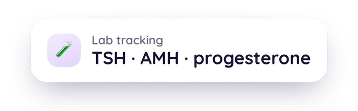

You Can Upload Your Raw DNA File: What Go Go Gaia Shows, and What It Doesn't
You can now upload a 23andMe or AncestryDNA raw export and see what's found. This guide covers exactly what the feature shows, why it quotes named public sources instead of making its own calls, what the two separate consents cover, what deletion actually removes, and the honest list of what it deliberately doesn't do.

Educational content about an app feature, not medical or genetic-counseling advice. For anything about your own results, talk to a doctor or a certified genetic counselor.
Medical Disclaimer
This article is for educational and informational purposes only and does not constitute medical or genetic-counseling advice. It describes an app feature and what it can and can't show. It is not a substitute for consultation with a doctor or a certified genetic counselor, especially if you're weighing a personal or family health decision. If you have questions about a specific result, please talk to a qualified professional.
Quick Answer: What Does This Feature Actually Do?
You can upload a raw DNA file and see what it contains, matched against a curated panel and shown with a named source for every finding. In short:
- It shows: hits, positions your file carries a variant at, with an attributed citation (ClinVar, GWAS Catalog, or CPIC)
- It never shows: a "you're negative for X" statement, a diagnosis, or a risk score, and the panel carries no hereditary-cancer or carrier genes at all
- Consent and deletion are separate, explicit, and reversible at any time. Uploading happens in the web app, not the iOS app
If you've read the first two posts in this series, on what's actually in a 23andMe or AncestryDNA file and how to read a genome VCF, you already know the two honesty problems any tool reading one of these files has to solve: a fixed probe list only covers a fraction of any gene, and an absent position is never the same as a negative result. This feature is built around both of those facts, not around them.
The Feature, Plainly
What you can upload today is a 23andMe or AncestryDNA-style raw array export: a .txt, .csv, .tsv, .zip, or .gz file, up to 64 MB. Either reference genome build works, GRCh37 or GRCh38. Sequencing VCFs from a genome test aren't accepted yet, and neither are whole-genome-scale files or gVCFs. Those are real limits, not hidden ones.
This runs in the Go Go Gaia web app at app.go-go-gaia.com, not in the iOS app, since it's a file you almost certainly have sitting on a computer rather than a phone.
Your file is matched against a curated panel of 28 markers across 24 genes. Anything found shows up as a card with the trait or pharmacogenomic association named, plus its source, and, where relevant, alongside your other results in the body map.
Attribution-Only: What That Actually Means
"Attribution-only" is the whole design, not a footnote. When a card shows you a finding, it's quoting what a named public source says about that specific position: a ClinVar classification, a GWAS Catalog association, or a CPIC pharmacogenomic guideline.[1][2][3] It's never Go Go Gaia's own medical opinion about your DNA. On the curated panel, if there's no source behind a position, there's no statement.
That's a deliberate, narrower stance than a lot of DNA interpretation tools take. It means some things you might expect to see, like a plain-language guess about a trait with weak evidence behind it, simply aren't shown, because there's no citable source to attach to them.
ClinVar Star Ratings: Why Confidence Gets Shown, Not Just a Result
ClinVar assigns each variant classification a review status, shown as zero to four gold stars, based on how much independent review backs it.[1] Roughly:
- 1 star: a single submitter provided their criteria and evidence
- 2 stars: multiple submitters agree, with criteria and no conflicts
- 3 stars: reviewed by a recognized expert panel
- 4 stars: reflects a practice guideline
The rating travels with the finding rather than getting filtered out of sight. Several entries on the panel are well-known trait associations that sit at zero stars in ClinVar, meaning no submitter provided assertion criteria, and those are shown with that grade stated plainly rather than quietly dropped or quietly promoted. A 1-star classification and a 3-star one aren't the same level of confidence, and collapsing them into one label would hide that. Seeing the rating lets you judge how much evidence is actually behind a card, the same way the first post in this series covers array coverage gaps: the honest answer includes how much was actually checked, not just a headline result.
Consent: Two Separate Choices, All Reversible
There are two separate choices here, not one. Uploading requires its own explicit agreement before your first upload, shown as its own notice and logged with its version, and it covers only your own genetic data, never a partner's or a family member's. Letting your genetic data help train our models is a second choice, off by default, and it is not covered by the general model-improvement setting elsewhere in Settings. Each one is recorded on its own and can be withdrawn on its own, at any time, without disturbing the other. See the full privacy policy for the exact scope of both.
Purge: What Deleting Actually Removes
You can delete your genetic data at any time in Settings under Privacy & Consent. Your original file is kept encrypted while it's there, so you can view or re-download it, and deleting removes that stored file, every earlier stored version of it, and everything extracted from it, then withdraws your upload consent going forward. It's a removal, not a soft archive.
What It Deliberately Doesn't Do
This is the part worth reading closely, because it's the honest limit on the whole feature:
- No diagnosis, ever. A finding is a citation, not a medical determination.
- No risk score. Findings aren't combined into a single number meant to represent your overall risk for anything.
- No hereditary-cancer or carrier genes on the panel. BRCA1, BRCA2, CFTR, and FMR1 are deliberately left off it, regardless of what's technically present in your file, because an array can't answer those questions honestly. If you have a lab's own report on any of them, that's a separate PDF upload path where the app quotes what your lab concluded rather than interpreting anything itself.
- No "you're negative" statements, ever. If a position isn't found in your file, the honest state is unknown, not clear. A raw file can't distinguish "you don't carry this" from "this was never checked," and pretending otherwise would be a false reassurance. Post one and post two in this series cover exactly why, for arrays and VCFs respectively.[4]
None of these are technical shortcuts waiting to be lifted later. They're the actual design of an attribution-only feature: it can only ever tell you what a named source says about what it finds, and it's built to stay quiet about everything else.
See what your own file shows
Upload your 23andMe or AncestryDNA export in the web app and get attributed results with a named source and its confidence level for every finding, never a guess dressed up as an answer.
Upload Your Raw DNA FileThe Bottom Line
Uploading a raw DNA file now gets you cited, attributed findings against a curated panel, shown with the source's own confidence level, never a diagnosis or a risk score. What isn't found stays honestly unknown rather than getting dressed up as a clean result. If you haven't yet, start with what's actually in a 23andMe or AncestryDNA file to understand exactly what you're uploading before you do, and how to read the VCF from a genome test if sequencing is what you had done.
Related Reading
Still deciding whether to upload it?
Read the consent notice first, upload only your own file, and delete the whole thing whenever you want.
Open the Web Uploader